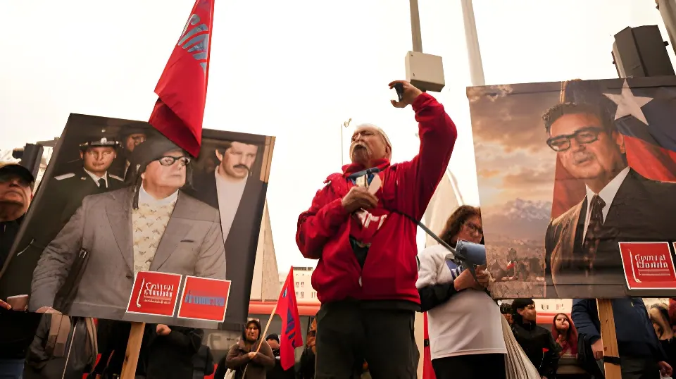

Le 11 septembre 2026, le Chili a commémoré le 53e anniversaire du coup d'État militaire qui renversa le président Salvador Allende. Pour la première fois depuis le retour à la démocratie en 1990, le gouvernement — dirigé depuis mars 2026 par José Antonio Kast — n'a organisé aucune cérémonie officielle, ravivant un débat toujours vif sur le devoir de mémoire dans un pays encore profondément divisé sur son passé.
Élu en septembre 1970 à la tête de la coalition de gauche Unité populaire, Salvador Allende devient le premier président marxiste démocratiquement élu d'Amérique latine. Son programme de nationalisations — cuivre, banques, grandes entreprises — et de réformes sociales se heurte rapidement à une opposition farouche du patronat, du Congrès et d'une partie de la classe moyenne, tandis que l'inflation grimpe à plus de 300 % en 1973. Washington, sous les administrations Nixon et Kissinger, finance en sous-main l'opposition et la presse hostile au gouvernement, dans un climat de guerre froide où toute expérience socialiste en Amérique latine est perçue comme une menace.
Au fil de 1973, le pays s'enfonce dans la paralysie : grèves des transporteurs routiers, pénuries, manifestations de rue quasi quotidiennes. Le 22 août 1973, la Chambre des députés vote une résolution accusant le gouvernement de violer la Constitution, un texte que l'armée invoquera plus tard pour justifier son intervention.
La marine chilienne prend le contrôle du port de Valparaíso. L'armée de terre, l'aviation et les carabiniers rejoignent le mouvement dans les heures qui suivent. Allende, informé, se rend au palais présidentiel de la Moneda.
Depuis la Moneda, Allende s'adresse une dernière fois à la nation par radio, refusant l'exil que lui proposent les militaires et affirmant sa fidélité au mandat populaire qui lui a été confié.
Deux chasseurs Hawker Hunter bombardent au canon le palais de la Moneda, suivis par l'assaut des chars. À 14 heures, le bâtiment est investi.
Salvador Allende est retrouvé mort, tué par l'arme automatique qui lui avait été offerte par Fidel Castro. Une junte militaire réunissant Augusto Pinochet, Gustavo Leigh, José Toribio Merino et César Mendoza s'installe au pouvoir le jour même.
Le stade national de Santiago est transformé en centre de détention pour près de 40 000 personnes. Près de 1 800 personnes sont exécutées dans les semaines qui suivent le coup d'État.
La junte dissout le Congrès, interdit les partis de gauche et confie à la DINA, sa police politique créée en 1974, la traque des opposants. Des centres de détention clandestins comme Villa Grimaldi ou Londres 38 deviennent des lieux de torture systématique. La tristement célèbre « Caravane de la mort », escadron militaire itinérant, exécute sommairement des dizaines de prisonniers politiques dans plusieurs villes du pays dès l'automne 1973.
Le régime chilien participe également à l'opération Condor, réseau de coopération répressive entre dictatures sud-américaines qui traque les opposants exilés au-delà des frontières : l'ancien ministre Orlando Letelier est ainsi assassiné à Washington en septembre 1976. Entre 500 000 et un million de Chiliens — jusqu'à 10 % de la population — quittent le pays entre 1973 et 1989.
| Indicateur | Chiffre | Source |
|---|---|---|
| Assassinats et disparitions | 3 065 | Rapports Rettig / Valech |
| Détentions et tortures reconnues | ~40 000 | Commissions Valech I et II |
| Chiliens exilés (1973-1989) | 500 000 à 1 M | Estimations historiennes |
| Arrestation de Pinochet à Londres | 1998 | Mandat du juge Garzón |
| Mort de Pinochet | 10 déc. 2006 | Jamais incarcéré |
« Bien plus tôt que tard, s'ouvriront à nouveau les grandes avenues par lesquelles passe l'homme libre. »
— Salvador Allende, dernier discours radiodiffusé, 11 septembre 1973Le 11 septembre 2026, José Antonio Kast — arrivé au pouvoir en mars après sa victoire électorale — a exhorté ses concitoyens à « regarder vers l'avenir », sans organiser le moindre hommage institutionnel. C'est la première fois depuis le retour à la démocratie qu'aucune cérémonie officielle n'accompagne cette date. L'ancien président Gabriel Boric s'est quant à lui rendu au Cimetière général de Santiago, sur la tombe d'Allende, rappelant qu'« il est important de ne jamais oublier ». Une partie de la population a dénoncé dans l'absence de cérémonie une forme de « négationnisme », tandis que le camp présidentiel a défendu son choix comme relevant de la responsabilité de gouverner plutôt que de commémorer.
Cinquante-trois ans après, le 11 septembre reste au Chili une ligne de fracture plus qu'une date consensuelle. Que l'on y voie le jour où une expérience démocratique a basculé dans la terreur ou celui où l'armée a mis fin à une crise jugée insoluble, le silence institutionnel de 2026 montre que le pays n'a toujours pas trouvé de récit commun sur cette période. Tant que les familles de victimes continuent de chercher la vérité sur des centaines de disparitions non élucidées, la question posée par cet anniversaire dépasse le seul passé : elle interroge la capacité d'une société à se réconcilier avec son histoire sans en effacer la douleur.
El 11 de septiembre de 2026, Chile conmemoró el 53.º aniversario del golpe militar que derrocó al presidente Salvador Allende. Por primera vez desde el retorno a la democracia en 1990, el gobierno —dirigido desde marzo de 2026 por José Antonio Kast— no organizó ninguna ceremonia oficial, reavivando un debate siempre vivo sobre el deber de memoria en un país aún profundamente dividido sobre su pasado.
Elegido en septiembre de 1970 al frente de la coalición de izquierda Unidad Popular, Salvador Allende se convierte en el primer presidente marxista democráticamente elegido de América Latina. Su programa de nacionalizaciones —cobre, bancos, grandes empresas— y de reformas sociales choca rápidamente con una oposición feroz del empresariado, del Congreso y de parte de la clase media, mientras la inflación supera el 300 % en 1973. Washington, bajo las administraciones Nixon y Kissinger, financia de manera encubierta a la oposición y a la prensa hostil al gobierno, en un clima de Guerra Fría donde toda experiencia socialista en América Latina es percibida como una amenaza.
A lo largo de 1973, el país se hunde en la parálisis: huelgas de camioneros, desabastecimiento, manifestaciones callejeras casi diarias. El 22 de agosto de 1973, la Cámara de Diputados vota una resolución que acusa al gobierno de violar la Constitución, texto que el Ejército invocará más tarde para justificar su intervención.
La Armada chilena toma el control del puerto de Valparaíso. El Ejército, la Fuerza Aérea y Carabineros se suman al movimiento en las horas siguientes. Allende, informado, se dirige al palacio de La Moneda.
Desde La Moneda, Allende se dirige por última vez a la nación por radio, rechazando el exilio que le proponen los militares y reafirmando su fidelidad al mandato popular que se le confió.
Dos cazas Hawker Hunter bombardean con cañón el palacio de La Moneda, seguidos por el asalto de los tanques. A las 14 horas, el edificio es tomado.
Salvador Allende es hallado muerto, con el arma automática que le había regalado Fidel Castro. Una junta militar integrada por Augusto Pinochet, Gustavo Leigh, José Toribio Merino y César Mendoza asume el poder ese mismo día.
El Estadio Nacional de Santiago se convierte en centro de detención para cerca de 40 000 personas. Cerca de 1 800 personas son ejecutadas en las semanas posteriores al golpe.
La junta disuelve el Congreso, prohíbe los partidos de izquierda y encarga a la DINA, su policía política creada en 1974, la persecución de los opositores. Centros de detención clandestinos como Villa Grimaldi o Londres 38 se convierten en lugares de tortura sistemática. La tristemente célebre «Caravana de la Muerte», escuadrón militar itinerante, ejecuta sumariamente a decenas de presos políticos en varias ciudades del país desde el otoño de 1973.
El régimen chileno participa además en la Operación Cóndor, red de cooperación represiva entre dictaduras sudamericanas que persigue a los opositores exiliados más allá de las fronteras: el excanciller Orlando Letelier es así asesinado en Washington en septiembre de 1976. Entre 500 000 y un millón de chilenos —hasta el 10 % de la población— abandonan el país entre 1973 y 1989.
| Indicador | Cifra | Fuente |
|---|---|---|
| Asesinatos y desapariciones | 3 065 | Informes Rettig / Valech |
| Detenciones y torturas reconocidas | ~40 000 | Comisiones Valech I y II |
| Chilenos exiliados (1973-1989) | 500 000 a 1 M | Estimaciones históricas |
| Detención de Pinochet en Londres | 1998 | Orden del juez Garzón |
| Muerte de Pinochet | 10 dic. 2006 | Nunca encarcelado |
« Mucho más temprano que tarde, se abrirán las grandes alamedas por donde pase el hombre libre. »
— Salvador Allende, último discurso radial, 11 de septiembre de 1973El 11 de septiembre de 2026, José Antonio Kast —en el poder desde marzo tras su victoria electoral— instó a sus compatriotas a «mirar hacia el futuro», sin organizar ningún homenaje institucional. Es la primera vez desde el retorno a la democracia que ninguna ceremonia oficial acompaña esta fecha. El expresidente Gabriel Boric, por su parte, acudió al Cementerio General de Santiago, a la tumba de Allende, recordando que «es importante no olvidar nunca». Parte de la población denunció en la ausencia de ceremonia una forma de «negacionismo», mientras el oficialismo defendió su decisión como parte de la responsabilidad de gobernar antes que de conmemorar.
Cincuenta y tres años después, el 11 de septiembre sigue siendo en Chile una línea de fractura más que una fecha consensuada. Ya se vea en ella el día en que una experiencia democrática se hundió en el terror o aquel en que el Ejército puso fin a una crisis considerada insoluble, el silencio institucional de 2026 muestra que el país todavía no ha encontrado un relato común sobre este período. Mientras las familias de las víctimas sigan buscando la verdad sobre cientos de desapariciones no esclarecidas, la pregunta que plantea este aniversario va más allá del pasado: interroga la capacidad de una sociedad para reconciliarse con su historia sin borrar su dolor.